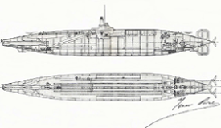
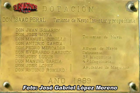
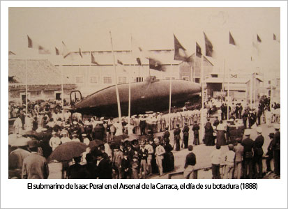

Plano del submarino Peral y submarino Peral en Cartagena
MUSEO NAVAL DE CARTAGENA
IMAGEN VECTORIAL DEL SUBMARINO PERAL
Entrevista a Javier Sanmateo Isaac Peral, bisnieto de Isaac Peral. Autor del libro:"EL SUBMARINO PERAL. LA GRAN CONJURA"



Placa de la primera navegación del submarino y botadura en 1888